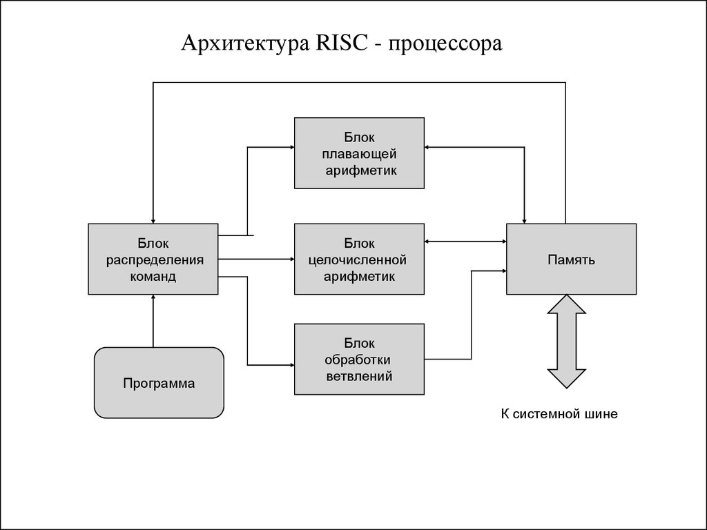

Выполнил: Сергеев Никита
Студент ИОПС-23м
RISC (reduced instruction set computer) - это архитектура набора команд, разработанная в 1980-х годах с целью упростить и оптимизировать процесс выполнения инструкций на процессорах
ARM (Advanced RISC Machine) - архитектура процессоров, разработанная в 1983 году компанией Acorn Computers
RISC-V (Reduced Instruction Set Computing) - это открытая архитектура процессоров, разработанная в 2010 году в Калифорнийском университете в Беркли